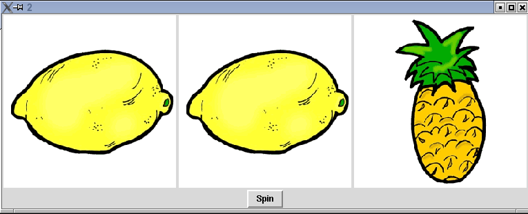
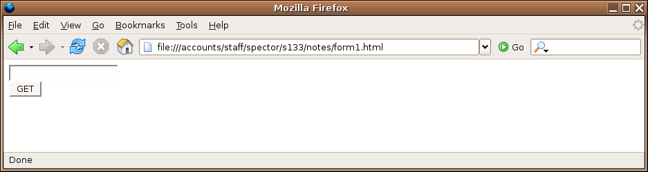
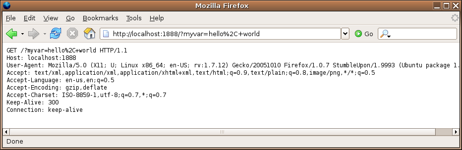
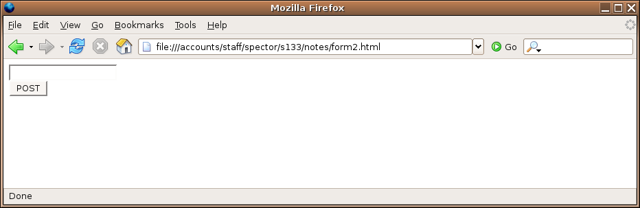
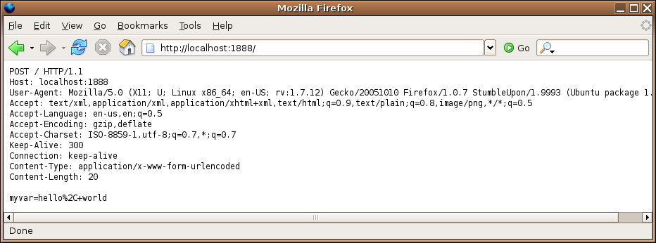
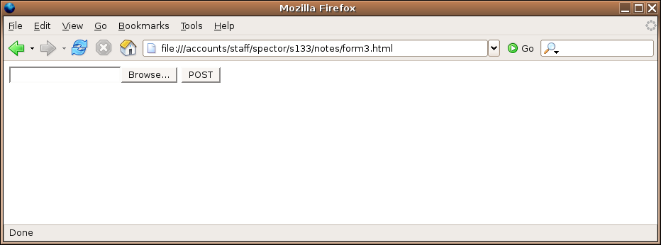
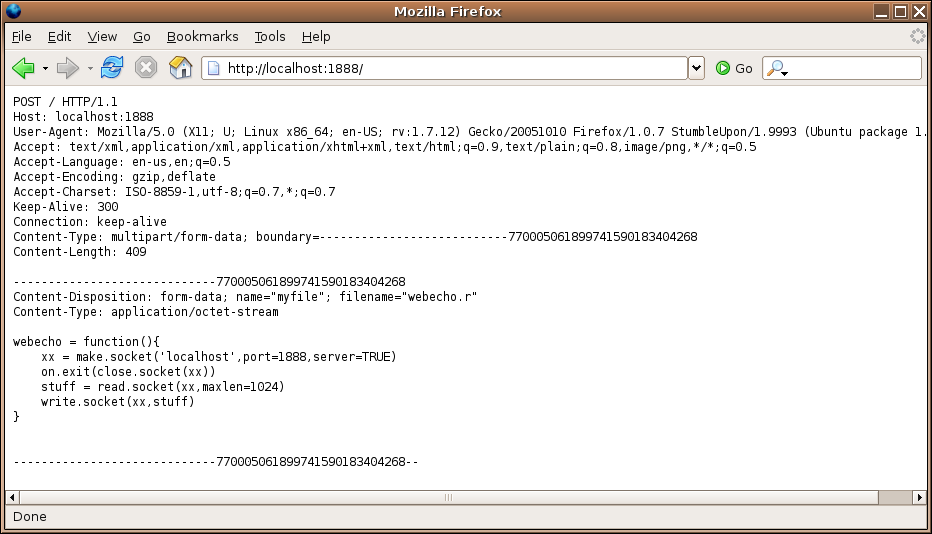

GUIs / CGI Programming
1 Using Images with the tcltk package
The current version of tcl that ships with R allows you to display
images in your GUIs, but only if they are in GIF format. Fortunately,
it's very easy to change the format of images if they are, for example
JPEG or PNG files. On any SCF machine, the command:
mogrify -format gif *.jpg
will convert all the files ending in .jpg to files with
the same name, but in the GIF format. You can then use the .gif
files that are created to display in your GUI.
To use images with the tcltk library, first create a Tcl variable
representing the image with code like:
myimage = tclVar()
tcl("image","create","photo",myimage,file="picture.gif")
Next, create a tklabel using the image= argument
pointing to the tcl variable that holds the image:
img = tklabel(frame,image=myimage)
Like any other widget, you can change the image during the execution
of your program using the tkconfigure function. Suppose we have another
tcl variable called otherimage that has an image associated with it.
To change the img widget to display that image, use
tkconfigure(img,image=otherimage)
If you have many pictures, it will be more convenient to store the tcl image variables
in a list. Suppose the R list pics contains the full pathname of several
GIF files. (It's usually simplest to use setwd to change to the directory
where you're storing the GIF files, so that you only need to type their names, not
their full paths. The command
setwd(file.choose())
allows you to navigate to the directory with the GIF files.)
The following example displays pictures of three fruits, chosen from a list
of five. When the button is pressed, it uses tkconfigure to change
each picture many times, to give the illusion of a slot machine. Note the
use of sapply to create a list of images, regardless of the number
of images used.
require(tcltk)
pics = list.files('fruits',pattern='\\.gif$')
pics = paste('fruits/',pics,sep='')
n = length(pics)
theimages = sapply(pics,function(pic)
tcl("image","create","photo",tclVar(),file=pic))
spinner = function(...){
for(i in 1:50){
r = sample(1:n,size=3,replace=TRUE)
tkconfigure(img1,image=theimages[[r[1]]])
tkconfigure(img2,image=theimages[[r[2]]])
tkconfigure(img3,image=theimages[[r[3]]])
tcl('update')
Sys.sleep(.07)
}
}
top = tktoplevel()
f1 = tkframe(top)
f2 = tkframe(top)
r = sample(1:n,size=3,replace=TRUE)
img1 = tklabel(f1,image=theimages[[r[1]]])
img2 = tklabel(f1,image=theimages[[r[2]]])
img3 = tklabel(f1,image=theimages[[r[3]]])
tkpack(img1,side='left')
tkpack(img2,side='left')
tkpack(img3,side='left')
tkpack(tkbutton(f2,text='Spin',command=spinner),side='bottom')
tkpack(f1,side='top')
tkpack(f2,side='bottom')
A picture of the GUI before spinning is shown below

2 Web Servers
We're all familiar with the use of a webserver - we type an address or click
on a link, and then the page we want appears in our browser. But what actually
happens when we type in a web address? Web servers are simply programs that
listen for requests on a particular port (port 80 by default), and then send
out information to the connection that requested it.
Such a two-way connection is known as a socket.
To see what really happens
when a request is sent to a webserver, we can write an
R program that creates a socket on an unused port, and then try to access that
port through a web browser. Then we can have our program simply send back
whatever it received in order to see what's really going on. The program is
surprisingly simple:
webecho = function(){
xx = make.socket('localhost',port=1888,server=TRUE)
on.exit(close.socket(xx))
stuff = read.socket(xx,maxlen=1024)
write.socket(xx,stuff)
}
The function opens a socket to port 1888, reads whatever gets sent to it, and
then sends it right back to the same place as the request came from, so
it can be displayed in a browser. The
call to on.exit makes sure that the socket is closed after the
communication takes place. To run the program so that it will be able to
respond to requests, we place it in a loop:
> while(1)webecho()
(If you run the program on a UNIX system, you'll have to quit your R
session (with control-\) to stop it; on a Windows system you may
be prompted to quit your R session when you try to exit.)
Now let's type the following address into a browser:
http://localhost:1888/something
Here's what appears in the browser:
GET /something HTTP/1.1
Host: localhost:1888
User-Agent: Mozilla/5.0 (X11; U; Linux x86_64; en-US; rv:1.7.12) Gecko/20051010 Galeon/1.3.21 (Debian package 1.3.21-6ubuntu3) (Ubuntu package 1.0.7)
Accept: text/xml,application/xml,application/xhtml+xml,text/html;q=0.9,text/plain;q=0.8,image/png,*/*;q=0.5
Accept-Language: en
Accept-Encoding: gzip,deflate
Accept-Charset: ISO-8859-1,utf-8;q=0.7,*;q=0.7
Keep-Alive: 300
Connection: keep-alive
The output consists of the actual request (the line with the GET),
and a series of headers. This is all the information that is transmitted
from the browser to the webserver when a request is made for a particular
page. Once a webserver receives a request like this, it returns the page
that the user requested (as specified in the GET directive). If
that page contains images, documents or additional programs, they would be
sent to the browser through the same mechanism.
This is fine for ordinary, static pages, but what about the case where we
accept input from the user? This would be the case when data is entered into
a field, or checkboxes are checked on a page, and then a button is clicked to
send the information from the browser to the web server. Web pages that accept
information are known as forms.
There are two mechanisms that can be used to send information from a
web browser to a webserver;
GET (which is the default, if you don't explicitly state a method) and POST.
(We'll look at their differences shortly.)
For example, the HTML that would be used on
a web page to accept a text field and use the GET method to send the
information would look like this:
<form action='http://localhost:1888' method=GET>
<input type=text name=myvar><br>
<input type=submit value='GET'>
</form>
</html>
Notice the action= specification in the form tag; this specifies the
program which will be executed once the information is sent from the browser
to the web server. The name= specification, which must always be
present in an HTML that will accept information from a user, defines the name
of a CGI variable. CGI stands for "Common Gateway Interface", and is a
catch-all term for any program which is executed by a web server in response to
a request from a browser.
Here's how this html would display in a browser:

What happens if we enter something in the field, and click on the button?
Let's put the words "hello, world" in the field and see:

First, notice that the address has changed, reflecting the address given in the
action= specification. Additionally, some text has been added to the
end of the displayed URL, and we can see that this same text was sent to the
web server as part of the GET specification.
The extra text that's in the URL and the GET specification is said to
be urlencoded; non-alphanumeric characters (like the comma) are replaced with
a percent sign followed by the two-digit hexadecimal representation of the
character, and spaces are replaced with plus signs. (A complete list of the
encodings can be found at http://www.w3schools.com/tags/ref_urlencode.asp).
This method of transfering information has its limitations. First of all, it's
obvious that it won't work for things like files, because there's just not enough
room in a URL to accomodate files of arbitrary length. Secondly, it may not be
prudent to display the information that you're transfering in the URL where it can
easily be seen. An alternative to GET is known as POST. Let's
see how it differs from GET by creating a form identical to the first
one, but with the method specified as POST. The html looks like this:
<form action='http://localhost:1888' method=post>
<input type=text name=myvar><br>
<input type=submit value='POST'>
</form>
Here's how it displays in the browser:

Once again, we'll enter "hello, world", and click on the button:

Notice that the URL no longer has any information about the CGI variables;
the urlencoded string with the values now appears after the header information
that the web browser sent. (Remember that for protocols like HTTP, a single
completely blank line indicates the end of the headers.)
Since the information in the form is not placed in
the URL, this should allow us to upload local files to a CGI program. Here's
the HTML code for a form that will upload a file:
<form action='http://localhost:1888' method=post enctype="multipart/form-data">
<input type=file name='myfile'>
<input type=submit value='POST'>
</form>
Here it is displayed in a browser:

The Browse... button is generated automatically when type=file
is specified for an input element. For file uploading, the method must be set
to post; using get just won't work. Now I'll fill out the
form with the name of the file that holds the source for the webecho
function that we've been using to see how it gets transfered.

The file is sent (after the headers) in a form very similar to an email attachment.
One big difference is that, if the file to be transmitted is a non-text file
(like an image or document), no encoding needs to be done - the HTTP protocol
utilizes all 8 bits of each byte. You may have noticed the
enctype="multipart/form-data" specification in the previous form.
This is what causes the web browser to send it's data in the "attachment"
style, and is required when you're uploading a file. If you specify it in a
normal form, it will send the CGI variable information in a similar
fashion. With a form like this:
<form action='http://localhost:1888' method=post enctype="multipart/form-data">
<input type=text name=myvar><br>
<input type=submit value='POST'>
</form>
entering "hello, world" results in the following:
POST / HTTP/1.1
Host: localhost:1888
User-Agent: Mozilla/5.0 (X11; U; Linux x86_64; en-US; rv:1.7.12) Gecko/20051010 Firefox/1.0.7 StumbleUpon/1.9993 (Ubuntu package 1.0.7)
Accept: text/xml,application/xml,application/xhtml+xml,text/html;q=0.9,text/plain;q=0.8,image/png,*/*;q=0.5
Accept-Language: en-us,en;q=0.5
Accept-Encoding: gzip,deflate
Accept-Charset: ISO-8859-1,utf-8;q=0.7,*;q=0.7
Keep-Alive: 300
Connection: keep-alive
Content-Type: multipart/form-data; boundary=---------------------------14394547745218385925125258
Content-Length: 178
-----------------------------14394547745218385925125258
Content-Disposition: form-data; name="myvar"
hello, world
-----------------------------14394547745218385925125258--
Note that in this case, there was no urlencoding of the variable's value.
3 CGI Scripting
Before continuing, it's worth making note of some very practical details that
you'll have to consider before beginning a project that uses CGI scripting.
The programs which a web server will execute in response to a request need to
be in specially designated directories, or the web server will treat them as
ordinary documents, not programs. In general, access to such directories will
be limited, both for financial and security reasons. In addition, a program which
requires large amounts of computer resources may make it difficult for others
who use the server to get anything done.
When you are writing CGI programs, it's very important to avoid allowing users
manipulate any input which might find its way outside of the web server's
slightly protected environment. What this means is that programs that call
operating system programs, (for example calls to system in R), should
generally be avoided.
Now that we've seen what's going on behind the scenes, we can start to look
at the facilities in R that will allow us to write CGI scripts.
The CGIwithR library provides a "wrapper" script that sets up an
environment in which R can run.
The most important
function of the CGIwithR library is to gather all the
information that the web browser has sent to the web server (regardless of
how it was sent to the browser) and to make it easily available inside of
R. The CGIwithR library takes all of the CGI variables (defined in
the forms that a user has responded to), and places them in a list called
formData, which can be manipulated like any other list in R. Note that
the library resolves all issues regarding which method (get or post) was used
in the form that generated the variables, and that the formData list
is the only object you need to look at to get the values of the CGI variables
defined in the form.
Once your program has received the information from a user's web browser, any
printing statements that you make in your program will be directed back to the
browser. This means that you need to follow the rules of HTML when you are
displaying results, not the ordinary rules that would apply for an regular R
session. The cat function is very useful in this regard, because it
displays exactly what you tell it to, without any element numbering or formatting.
If you know the basics of HTML, you may prefer to simply use cat to
generate most or all of the HTML your CGI script creates. (There is a library
called R2HTML that automates the "HTML-ization" of R objects, and you
may want to study it on your own, but we won't be using it here.) Here are some
ideas for generating appropriate output in CGI programs written with R.
4 A First CGI program with R
As a simple way of getting started with CGI programming, let's take the output
from the first simple form that we created and see how the information gets
translated from the CGI environment into the R environment.
I'm assuming that your SCF account
is s133xx and that you've followed the instructions at
http://www.stat.berkeley.edu/classes/s133/projects/tech/Cgiprogs.html to
prepare your account to use CGI scripting. Typically, you would put the page
containing the html in your public_html directory. Suppose the
following is placed in a file called form1.html in your
public_html directory:
<html>
<form action='cgi-bin/R.cgi/test1.cgi' method=get>
<input type=text name=myvar><br>
<input type=submit value='GET'>
</form>
</html>
Since file names
in HTML are interpreted relative to the directory that the HTML resides in,
we can refer to the CGI program relative to the cgi-bin directory.
Notice that this will allow you to use the same form whether you're running on
the SCF network or through a tunnel.
In addition to
the formData list that holds the values of the CGI variables, information
is also passed to your CGI program through environmental variables. These
variables can be accessed with the Sys.getenv function, but for our
purposes here, we can use the showEnvironmentVariables function that's
part of the CGIwithR package. Here's a simple program that will just
print out some information about the formData list and the environmental
variables that are transfered into the environment:
Here's the test1.cgi program:
HTMLheader()
cat('Class of formData=',class(formData),' Mode of formData=',mode(formData),'<br>')
cat('Names of formData=',names(formData),'<br>')
tag(pre)
print(formData)
untag(pre)
showEnvironmentVariables()
cat('</body></html>')
If we run the program (by pointing a browser at http://springer/ s133xx/form1.html, entering "hello, world" and pressing the button), here's what the
output looks like:
Class of formData= list Mode of formData= list
Names of formData= myvar
$myvar
[1] "hello, world"
SERVER_SIGNATURE Apache/2.0.54 (Ubuntu) Server at springer Port 80
R_INCLUDE_DIR /usr/local/linux/R-2.2.1/include
HTTP_KEEP_ALIVE 300
HTTP_USER_AGENT Mozilla/5.0 (X11; U; Linux x86_64; en-US; rv:1.7.12) Gecko/20051010 Galeon/1.3.21 (Debian package 1.3.21-6ubuntu3) (Ubuntu package 1.0.7)
SERVER_PORT 80
HTTP_HOST springer
LD_LIBRARY_PATH /usr/local/linux/R-2.2.1/lib:/usr/local/lib64:/usr/lib/gcc/x86_64-linux-gnu/3.4.5:/usr/X11R6/lib:/server/linux/j2sdk1.4.2_04/jre/lib/i386/client:/server/linux/j2sdk1.4.2_04/jre/lib/i386
DOCUMENT_ROOT /mirror/data/pub/html/classes/s133
HTTP_ACCEPT_CHARSET ISO-8859-1,utf-8;q=0.7,*;q=0.7
SCRIPT_FILENAME /class/u/s133/s133xx/public_html/cgi-bin/R.cgi
REQUEST_URI /~s133xx/cgi-bin/R.cgi/test1.cgi?myvar=hello%2C+world
SCRIPT_NAME /~s133xx/cgi-bin/R.cgi
R_GSCMD /usr/bin/gs
HTTP_CONNECTION keep-alive
PATH_INFO /test1.cgi
REMOTE_PORT 48242
PATH /usr/local/bin:/usr/bin:/bin
R_LIBS
PWD /class/u/s133/s133xx/public_html/cgi-bin
SERVER_ADMIN webmaster@localhost
R_SHARE_DIR /usr/local/linux/R-2.2.1/share
LANG
HTTP_ACCEPT_LANGUAGE en
PATH_TRANSLATED /class/u/s133/s133xx/public_html/cgi-bin/test1.cgi
HTTP_REFERER http://springer/~s133xx/form1.html
HTTP_ACCEPT text/xml,application/xml,application/xhtml+xml,text/html;q=0.9,text/plain;q=0.8,image/png,*/*;q=0.5
REMOTE_ADDR 128.32.135.22
SHLVL 1
SERVER_NAME springer
FORM_DATA myvar=hello%2C+world
SERVER_SOFTWARE Apache/2.0.54 (Ubuntu)
QUERY_STRING myvar=hello%2C+world
SERVER_ADDR 128.32.135.22
GATEWAY_INTERFACE CGI/1.1
R_HOME /usr/local/linux/R-2.2.1
SERVER_PROTOCOL HTTP/1.1
HTTP_ACCEPT_ENCODING gzip,deflate
R_DOC_DIR /usr/local/linux/R-2.2.1/doc
REQUEST_METHOD GET
R_SESSION_TMPDIR /tmp/RtmpPPrmxy
R_PLATFORM x86_64-unknown-linux-gnu
R_PAPERSIZE letter
R_PRINTCMD lpr
R_LATEXCMD /usr/bin/latex
R_DVIPSCMD /usr/bin/dvips
R_MAKEINDEXCMD /usr/bin/makeindex
R_RD4DVI ae
R_RD4PDF times,hyper
R_UNZIPCMD /usr/bin/unzip
R_ZIPCMD /usr/bin/zip
R_BROWSER /usr/bin/firefox
EDITOR vi
PAGER /usr/bin/less
R_PDFVIEWER /usr/local/linux/bin/acroread
AWK gawk
EGREP grep -E
MAKE make
PERL /usr/bin/perl
TAR tar
LN_S ln -s
R_USE_AQUA_SUBDIRS no
You may have noticed that the URL we used for the action=
specification makes it look like R.cgi is a directory, not
a file. What happens is that the R.cgi program gets
invoked by the web server, and it examines the PATH_INFO
variable to find the name of your script (test1.cgi in this case.)
It then loads up the formData list and calls your program.
If you examine the information that our simple web echoing program displayed,
you'll see that each of the headers that were passed to the program have
been transfered to environmental variables with a prefix of HTTP_.
Although you most likely won't need them, you can examine the list of
environmental variables to find information that you might want to use in
your CGI programs and then access the information by using Sys.getenv.
The most important thing to notice is that the myvar CGI variable,
defined in the input field of the HTML form, is available inside your R
program, in unencoded form, in the element with the name myvar. This
is the mechanism by which all the CGI variables are transfered into the R
environment.
File translated from
TEX
by
TTH,
version 3.67.
On 13 Apr 2011, 20:56.